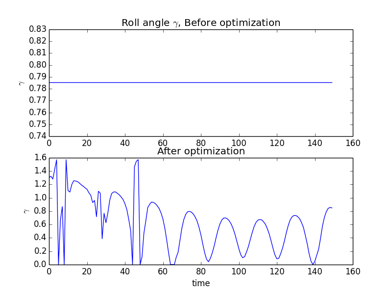

In this example, we will optimize the roll angle of the CADRE satellite as it passes over the ground station to maximize the gain of the communications system. This will demonstrate how to import the full CADRE assembly to solve a closely related (but smaller) optimization problem. This illustrates the flexibility of OpenMDAO’s problem graph and derivatives system with respect to variations in problem formulation.
The communication system gain is computed as the output of the Comm_GainPattern() component, as is an intermediate result in the full CADRE problem. For the sake of simplicity of the example, the roll angle will be the only design variable considered.
The internal graph representation of this problem in OpenMDAO allows an optimization driver to recognize that most of the components involved will never vary with respect to the roll angle. As a result, these components will only run a single time, allowing for efficient optimization of this smaller-scale design problem.
To begin, in a new Python file, we first import the libraries that we will use, which include (among other things) the CADRE assembly, the standard OpenMDAO Component and Assembly classes, and the SLSQP optimization driver.
from openmdao.main.api import Component
from openmdao.main.datatypes.api import Float, Array
from CADRE import CADRE
from openmdao.lib.drivers.api import SLSQPdriver
import os
import pylab
import numpy as np
Now, we define an OpenMDAO component that computes the sum of an input array. We will use the output of this component as our objective function later on.
class NetGain(Component):
"""
Computes the sum of an inputted gain array
"""
net = Float(iotype="out")
def __init__(self, n):
super(NetGain, self).__init__()
self.n = n
self.add('gain', Array(np.zeros(n), iotype='in', shape=(n,)))
def execute(self):
self.net = sum(self.gain)
def apply_derivT(self, arg, result):
if 'gain' in result and 'net' in arg:
result['gain'] += arg['net'] * np.ones(self.n)
Next, we create an instance of the CADRE base assembly and set appropriate configuration data (starting position and velocity of the satellite, and number of days since launch).
n, m = 1500, 150
top = CADRE(n, m)
# orbit initial position and velocity
r_e2b_I0 = [-4969.91222, 4624.84149,
1135.9414, 0.1874654, -1.62801666, 7.4302362]
# number of days since launch
LD = 5417.5
top.set("LD", LD)
top.set("r_e2b_I0", r_e2b_I0)
Running the assembly “as is” gives us a baseline state of the model, with all design variables at their default values. Our objective is to maximize the total communication gain (as computed by the Comm_GainPattern() component in the CADRE assembly), so let’s get that value:
# Run model to get baseline net gain value
top.run()
obj1 = sum(top.Comm_GainPattern.gain)
print "Net comm gain before optimization:", obj1
Now we’re ready to optimize. Replace the default RunOnce driver with the SLSQPdriver() optimization driver, add in the NetGain component, and configure the optimization problem:
# Add in optimization driver
top.add("driver", SLSQPdriver())
top.add("NetGain", NetGain(n))
top.driver.workflow.add("NetGain")
top.connect("Comm_GainPattern.gain", "NetGain.gain")
top.driver.add_parameter("CP_gamma", low=0, high=np.pi / 2.)
top.driver.add_objective("-NetGain.net")
Make a new two-plot figure, and in the first plot, graph the roll angles over time (the default value being a single uniform value over time):
pylab.figure()
pylab.title("Roll angle $\gamma$, Before optimization")
pylab.subplot(211)
pylab.plot(top.CP_gamma)
Run the assembly to perform the optimization and then record the new value of the gain:
top.run()
obj2 = sum(top.Comm_GainPattern.gain)
print "Net comm gain before optimization:", obj1
print "Net comm gain after optimization:", obj2
Net comm gain before optimization: 900.205301576
Net comm gain after optimization: 1115.10921256
Now plot the roll angle again (but in the second subplot of the original figure) to visualize the change in the roll angle, which is determined by the optimizer:
pylab.title("After")
pylab.subplot(212)
pylab.plot(top.CP_gamma)
pylab.show()
This gives us the figure:
This example is implemented in example_roll.py, in the top-level directory of the CADRE plugin repository, and can be run directly.
{kind=link}